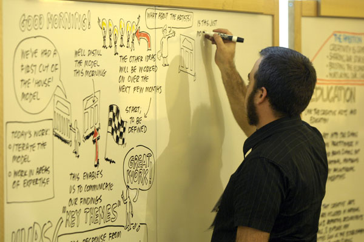

Agile UX和传统瀑布式UX不同之处在于它与交付过程的强关联，对于人的要求也更加全面，这也意味着你将改变你曾经绝大部分时间只在角落里做一件事的习惯，你被要求更加开放和学会合作，而从技能交付出发，在策略（Strategy）设计（Design）和研究（Research）三个方向有12种技能需要掌握。
策略层
和以往不同，你将会面向你的客户，而不是你的产品经理，你有足够的时间陪伴着你的客户，倾听他们的需要，不，更多地是帮助他们具象化他们的需求，形成产品设计方向的共识，并最终形成交付可行的计划。为了达到这一点，你需要以下4种技能：
讲故事（Storytelling）
你的目标是让客户达成对设计方向的共识，这个过程的效率取决于你对客户想法把控能力的高低。Empathy（同理心）是将客户不同想法归于统一的常见方法──把客户引入到同一情境之下，在情境中思考和做出绝断。那么，情境的建造就成为引导客户的首要技能。我们把这个情境的建造过程叫做“讲故事（Storytelling）”。
讲故事的方式有很多种，例如：
- 视觉沟通（Visual Communication）：视觉沟通是使用图形化的互动方式将沟通过程在白板和Flip-chart逐步展现出来。
- 故事板（Storyboarding）：使用大型白板，将一个完整的故事完整地展示出来，让所有人了解一个典型用户在完成不同用户目标完整的所有步骤。
- 草图（Sketching）：使用草图的方式来描述一个用户问题，或者一个概念性的解决方案，尽可能生动地让客户体会。
- 讲演（Pitching Presentation）：用讲演的方式将故事的前因后果完整地进行表达，让更高层级或者未参与的客户了解项目启动的背景，增强客户信心。
下面是一个使用视觉沟通的例子 
下面是一个故事板的实例
使用草图的方式表达消费者可能遇到的问题
使用高质量的文档表达项目背景
概念模型（Concept Generation）
在充分理解问题和背景知识之后，你需要带领客户和其他设计师进行概念模型的建立。概念模型的建立过程通常是：
- 在完整的消费者情境中寻找设计挑战，例如：如何能够让我第一时间获得航班变更信息？如何能让我避开高峰选择最合适的路线前往陌生城市的机场？
- 对设计挑战进行优先级排序──哪些是当前影响消费者最严重的挑战，哪些是最能获得消费者青睐的。
- 使用Five Sketches的方法，用五张草图表达对某个特定设计挑战的解决，分组展示，找出最受欢迎的亮点。
- 综合各种设计中的亮点，绘制出最终的概念模型草图并展示。
用各种草图设计表达概念模型:
概念模型的建立过程应该是开放的，并避免由于过于精细的设计而导致的设计权威问题，设计是综合所有人（特别是客户）意见和灵感的过程，而非一家之言。
战略策略（Strategic Envisioning）
客户往往什么都需要，一个好的体验设计师除了需要充满想象力的设计灵感和必要的逻辑思维之外，还需要在战略层面上，通过帮助客户建立一个战略层次上的事务优先级机制，建立产品演进的路线图，引导客户在正确的时间做正确的事情。
最简单的一套战略策略实践是VGA：Vision, Gap, Actions，下面一个使用VGA进行战略分析的实例，通过在资源、生产、产品、消费者接维度对现状进行评估，产生改进点。
- Vision: 了解对未来的愿景，这里的实践包括：Tomorrow Headlines, Product Box, Speedy Boat, Hot Balloon等等，通过互动的方式帮助客户对未来达成共识；
- Gap：为了达到未来的愿景，通过在资源、生产方式、产品、消费者关系、消费者几个维度上对现状的评估，寻找到现实和未来之间的差距，并寻找到最应该被及时缩小的差距作为改进点；
- Actions：围绕差距分析中被总结的改进点头脑风暴出可以执行的任务，每项任务应该结果导向，充分具象并可测试，指定责任人在一定时间内进行改进，并定期回顾。
交付计划（Delivery Planning）
体验设计师往往是项目交付的灵魂之一，这也体现在其对整体交付内容的把握。你需要时刻坚守M.V.P(Minimum Viable Product)的原则，尽可能引导客户缩小第一个交付的范围。
在这个过程中你需要用到的实践例如：
- 用户故事识别：在完整的客户体验地图（Customer Journey Map）中识别出最基础的用户故事（Backbone User Stories）用于建立起整个交付的骨架；
- 用户故事评估：带领开发人员进行用户故事的复杂度评估（后将另撰文描述如何进行项目启动时的工作量评估）；
- 交付计划设计：通过采用盲估团队能力的方法（Gut Feeling Velocity）设计出估计的交付计划。
这部分的实践有时也由BA（Business Analyst）完成，体验设计师也会全程参与。
设计层
这个层次的技能是传统用户交互设计师基本具有的，Agile UX鼓励融合的设计过程，这也是为什么我们反对在一个技能环节完全简单重复，而期待更多的技能重合，将职位模糊，使设计过程更加开发和透明。为了达到这一点，你需要以下五种技能：
内容策略（Content Strategy）
你的目标是和客户一起对当前客户以存在内容进行梳理，了解目标用户对于内容的需求，制定合理的内容发布机制，工作内容甚至还包含Taxonomy的梳理和设计，内容文字风格的确定。确实有这样的项目存在对这部分技能的要求，例如英国卫报，实践包括：
- Card Sorting: 使用卡片的方式进行信息组织和分组，寻找到最佳的信息分组方式，参考这里；
- Search Query Analysis: 分析在现有产品上用户的搜索行为也可以了解到用户对信息的需求分布情况，可参考这里；
- Site Map: 设计网站地图建立起站点级别上的内容组织，最终对内容分布达成一致；
信息架构（Information Architecture）
信息架构是在页面级别的信息组织──如何通过清晰和保持一致的信息组织架构，让用户第一时间了解所处位置和轻易获取所需信息；除了页面内的信息组织，还需要设计信息在不同页面模版间的流动方式。
信息架构是体验设计师必备的技能，任何体验必须基于清晰的信息设计和流动，实践包括：
- 草图Sketching：之前在概念原型中提到的草图技巧在信息架构中同样重要，现在草图本上进行绘制，梳理思维，第一时间展示，帮助后期继续的喜欢，可参考这个教程
- 线框图Wireframing：这里的线框图技巧包括Paper Wireframing以及传统意义上的线框图制作，不在乎你使用什么工具（Balsamiq, PowerPoint, Visio, Keynotes, 或者Omnigraffle等等），这可能是最基础的交互设计技巧，当年跟随Marc McNeil靠的就是一手没日没夜用ppt制作线框图的技能，那时候我被称作Wireframe Monkey。
- 用户流图User Flow：用户流图是从用户的角度出发看信息是如何流动的，用户对所接受的信息如何反馈，下一步的行为会是怎样，整个过程是不是通畅，可参考这里。
交互设计（Interaction Design）
如果说信息架构是“静”的信息设计，交互设计则是信息设计“动”的表现──必须通过用户的操作才能表达和处理信息，而不是简单的结构化表达。交互设计也是传统交互设计师的必备技巧之一，与信息架构的实践类似，其中包括：
设计图版Sketch Board：梳理出核心的用户目标，用草图的方式描述交互过程，在大型图版上进行展示，如
低保真原型Lo-fi Prototyping：使用手绘草图的方式以目标用户的视角描绘详细的交互过程，可参考这里，或者使用原型工具进行制作，例如Balsamiq或Auxre，如：

前端开发（UI Development）
体验设计师需要了解一定的前端开发知识，保证能在最短的时间内开发出高保真原型进行终端用户测试，往往这个部分的工作由体验设计师和前端工程师结对完成，体验设计师保证设计真正体现在前端代码中。这里需要的技能是HTML和CSS，以及部分简单的流行JavaScript框架，例如jQuery。我们习惯于使用直接手写HTML+CSS的方式制作高保真原型，而不使用Fireworks进行切图，当然殊途同归，工具不是关键。
视觉设计（Visual Design）
具备一定的视觉设计能力能够迅速提升产出物的品质，我们也鼓励在这方面进行培养，不可避免的是，视觉能力是需要长期专业培养才能获得的能力，一个合格的体验设计师，对视觉设计能力要求的底线是“知道什么样子是不好看了，且不能容忍”。
至少不能比上面这个差
研究层
这个层次是传统交互设计团队用研人员和产品经理的技能范畴，一般出现在交付项目的开始和演进阶段，更多关注目标用户群体研究，用户测试，产品演进等方面。研究层技能包括以下几个方面：
消费者研究（Customer Research）
消费者研究帮助客户在项目启动前了解目标消费者人群的基本特征，在其特定情境中充分挖掘用户价值，寻找潜在商业潜力，我们经常使用的消费者研究方法有以下几种：
- 用户约谈Customer Interview：我们会要求客户在市场上招募典型目标消费者进行约谈，通过用户建模（Persona）和消费者体验地图（Customer Journey Map）的方式挖掘消费者的用户目标（User Goals）、内在驱动（Motivations）以及痛苦（Pains），对于消费者的理解将帮助我们在未来的设计过程中建立其真实的情境，使得最后设计贴和终端使用者；
- 用户价值挖掘Customer Value Finding：除了用户约谈，我们还尝试用其他方法挖掘用户价值，例如使用社交网络了解目标消费群体对于特定话题都在关心什么，他们对竞争者有什么抱怨或者赞许；社交性的问答网站往往是发现用户价值的宝库，在其中可以看到消费者都在需要什么的帮助，而未来的产品设计能够解决这些问题，便能产生潜在的用户价值；产品本身也可能挖掘潜在价值，例如某个装修灵感收集产品在卧室图片旁边添加一个“想知道这间卧室的风水吗？”链接，通过统计点击链接的情况，了解用户对卧室风水信息的需求程度。
用户测试（User Behavior Research）
敏捷体验设计中的用户测试以按优先级排序的用户目标完成作为主线，并与交付同时进行，随时产出新的设计反馈进行变化，这点与传统瀑布式交互设计者中“需求冻结”的方式截然不同。
测试过程由两位体验设计师和真实用户共同完成，两位体验设计师分布负责引导和捕捉行为，测试环境为高保真的产品原型；每次用户测试的结果都会被总结成新的“设计挑战（Design Challenges）”，例如：如何让用户不再为筛选条件所迷惑；然后根据优先级进行设计，设计过程同样是开发和透明的，甚至邀请用户进行参与；最后将设计产生的变化加入下一个交付迭代，同时演进高保真原型，为下一轮用户测试做准备。
与交付同步的用户测试保证了设计在产品上线前就能进行对用户体验的验证，及时拥抱变化；在项目进行的后期，可直接采用测试环境进行测试，甚至可采用内部上线的方式，获取更多反馈。
数据演进（Analytics）
传统互联网中产品经理最多关注的是基于使用数据的产品演进，作为一个合格的体验设计师，也需要一定知识为有产品演进需要的客户提供服务。
这里所提供服务主要指A/B Testing──在敏捷体验设计中，A/B Testing有如下几个步骤：
充分了解产品当前在盈利模式、使用者、信息架构等方面的情境； 在情境中按照商业价值梳理出一系列用户目标，分别代表一定用户价值； 评估当前用户目标的完成情况（转化率），寻找到核心改进点； 对改进点进行开放式设计，尽量保持设计方案的简单有效，并进行一定的用户测试； 将新设计部署到生产环境，让消费者产生分流，通过数据统计决定最佳方案； 迭代式地持续进行A/B Testing保证产品持续性演进和优化；
写在最后
这就是一个敏捷体验设计师应该具备和努力发展的12种技能，很多技能之间又存在或多或少的内在联系，每个项技能又有多种实践进行支持，如果大家某项技能中的细节感兴趣，可以微博私信我；如果你愿意寻找和我们一起成长的机会，或者厌倦每天重复的工作，也可以和我联系。
关于Agile/Lean UX更多参考
- UX and Agile Development: 2012′s Challenges and Opportunities
- Lean UX: Getting Out Of The Deliverables Business | Smashing UX Design
- From User Stories to Storyboards to Tasks « Zen Agile
- From Sketchboards to Blueprints – facilitating detailed conversations about the evolving design | the architecture of everything
- Agile + UX: six strategies for more agile user experience
- Twelve emerging best practices for adding UX work to Agile development